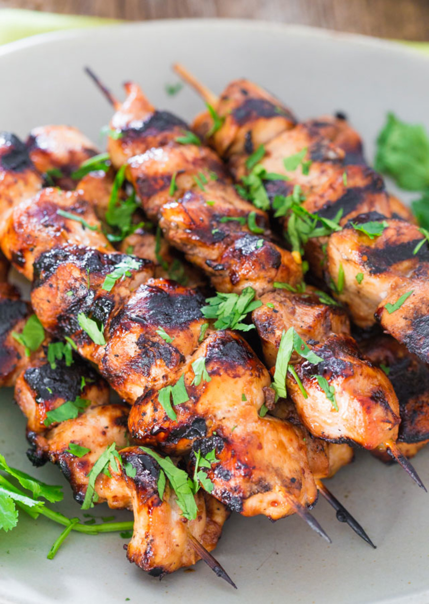

Recipe For Chicken Sekuwa

Sekuwa is meat roasted in a natural wood fire in a traditional Nepalese country style. While the meat is still raw,
it is mixed with natural herbs and spices and other ingredients. Sekuwa can be made with pork, lamb, goat or chicken,
or a mixture. Sekuwa is very popular in Nepal, especially in Dharan and Kathmandu.
Ingredients
- 1 lb boneless, skinless chicken breasts, cut into bite-sized pieces
- 2 tablespoons vegetable oil
- 2 tablespoons soy sauce
- 1 tablespoon chili powder
- 1 tablespoon ginger paste
- 1 tablespoon garlic paste
- 1 tablespoon cumin powder
- 1 tablespoon coriander powder
- 1 tablespoon turmeric powder
- 1 tablespoon garam masala
- 1/2 teaspoon salt
- 1/4 cup yogurt
- Juice of 1 lemon
- Bamboo skewers
Instructions:
- In a large bowl, combine the vegetable oil, soy sauce, chili powder, ginger paste, garlic paste, cumin powder,
coriander powder, turmeric powder, garam masala, salt, yogurt, and lemon juice. Mix well.
- Add the chicken pieces to the marinade and mix until the chicken is well-coated. Cover the bowl with plastic wrap
and refrigerate for at least 2 hours, or overnight.
- Soak bamboo skewers in water for at least 30 minutes.
- the chicken onto the skewers.
- Heat a grill to medium-high heat. Grill the chicken skewers for 6-8 minutes on each side, or until the chicken is
cooked through and slightly charred.
Serve hot with a side of naan bread, rice, and/or salad.
Go To Main Page